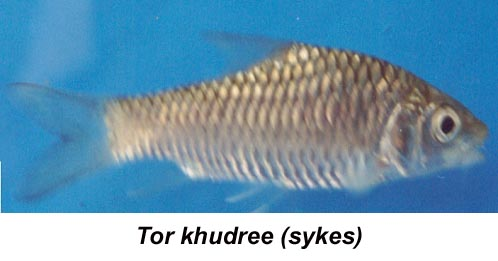

|
DIGITISED INVENTORY OF FRESHWATER FINFISHES AND SHELL FISHES OF INDIA |
Tor khudree
Taxonomic
Details
----- Valid Name
----- Classification
----- Synonyms
----- Common Names
Other
Biological Details
----- Habit and
Habitat
----- Morphological
Features
----- Reproductive
Biology
---------- Breeding
season
---------- Breeding techinique
---------- Fishing methods
----- Biology
Stages of development:
Economic
Importance
----- Uses
----- Parts Used
Economic potenial to the country
----- ----- Fishery statistics
Miscellaneous Information
Literature
Name :Tor
khudree (Sykes), 1839

Family:Cyprinidae
Classification:
Phylum: Chordata Subphylum: Vertebrata
Class: Actinopterygii Subclass:Neopterygii
Division: Teleostei Subdivision: Euteleostei
SuperOrder: Ostariophysi Order:Cypriniformes
SubOrder: N.A. Family:Cyprinidae
Subfamily:Cyprininae
Synonyms: Barbus khudree Sykes, 1839
Barbus malabaricus Jerdon, 1849
Barbus neilli Day, 1869
Tor khudree (Sykes), 1839
Tor khudree longispinnis (Gunther), 1868
Tor khudree malabaricus Jerdon, 1849
Tor kulkarni Menon, 1992
Tor kulkarnii Menon, 1992
Tor mosal mahanadicus David, 1953
Common Names:Yellow
Mahseer,Deccan Mahseer
HABIT & HABITAT: Warm Water
Distribution :Poona, Maharastra, Madras, Mahanadi river at
Hirakhud, Penisular India, Madhya Pradesh, Deccan and entire Godavari river, T.N.,
introduced in Pykara in Nilgiris, Andhra Pradesh, South India, Orrisa.
MORPHOLOGICAL FEATURES:Body elongate, its depth equal to length of head. Eyes rather small, visible from underside of head, its diameter 2.7 (in young) to 4.7 (in adults) times in head length. Mouth moderate; lips fleshy, the lower lip produced into a median lobe of varying length. Barbels two equal pairs, slightly shorter than eye- diameter in adults, equal to it in juveniles.
REPRODUCTIVE BIOLOGY: Tor khudree is heterosexual. Sex separation is made by secondary sexual characters developed during breeding season. The differentiating characters are not much apparent, and thus needs a rather trained look. Male is having almost straight body. Pectoral fin is smooth in touch and comparatively larger, reaching 7th scale below the lateral line. Outer ray of pectoral is pointed and straight. Inner margin of pectoral is almost straight. Anal fin base profile is comparatively straight or less arched, and do not very much project out of body profile line. Fine tubercles are sometimes present on the gill cover below the eyes, but this character is not always reliable. Female possesses bulky abdomen for enlarged ovary. In full ripeness, a few eggs may be extruded on slight pressure on the abdomen near the vent. Base of anal fin projects out of the profile line. Tubercles on the gill covers are absent (Kulkarni, 1970)
Breeding season:Khudree breeds sometimes in August-September in Deolali Hills (Hora and Misra, 1938). In Cauvery river system its spawning is taken place in November (CIFRI, 1982). In Nagarjunasagar reservoir its spawning is possibly held sometimes between June and September (CIFRI, 1982). This has been presumed correlating the availability of mature males during July-September and maturing females during June-September; sudden fall in the gonado-somatic index of males in October; and the gradual increase in the GSI values of females from June onwards up to September. Based on observations on the spawning migration of breeders and their congregation near the connecting streams with the lake Lonavla (after monsoon rains which spade up to the lakes with the streams having sufficient dilution of the water); avail- ability of oozing males and ripe and spent females during 2/3 months and for production of maximum number of ripe ova by stripping during a certain period, the Walwhan lakes (Lonavla) during July-September, with a peak spawning season between mid-July and mid-August. The spawning activity has been recorded to appear in the lake in 1970 with the onset of heavy monsoon when temperature came down to 24°C. The congregation of breeders in the lake was observed at 7-10 P.M. and again at 4-8 A.M.
Breeding techinique: Successful artificial fecundation and its propagation have been made in Walwhan and Shirawata lakes at Lonavla for the first time during 1970 by stripping of fully mature spawners and milters collected readily from and near the breeding ground. Rearing of eggs and hatchlings were done in running water system. The majority of the fry and fingerlings produced were used for planting the two reservoirs at Lonavla (Kulkarni, 1970). .
Fishing methods:N.A.
BIOLOGY:The sporting habit, strong locomotion power,
hardiness to stand long distance transport, and long hatching and semi-
quiescent period are some of the important biological features of khudree
mahseer. Like other mahseer it prefers deep moving waters for feeding and
growth, and requires small running streams for breeding and depositing eggs (Kulkarni,
1970). The fertilised eggs of7: khudree in moist cotton remained viable
for 48 hours (under laboratory and field trials for transplantation of the seed)
and hatched out normally (Kulkarni and agale, 1978). During semi-quiescent
period (6 days) hatchlings remain in tucked cluster form at comers and crevices
with the tail vibrating and julting out, and away from light being negetively
phototropic. In this condition, the hatchlings are subject to depredation in
large numbers by animals and fetch a heavy mortality at this stage. The
mortality may be heavy if the semi-quiescent stage is further prolonged due to
more colder water of the breeding ground. The typical features of the alimentary
system having no teeth in the jaws but presence of thick lips for sucking soft
food like algal incrustation from the submerged hard substratum, slightly
distended tube-like straight stomach with glandular inner linning, moderately
long intestine (body length/gut length ratio 3.2-4.0), large gall bladder for a
copious supply of digestive juices for assimilation of vegetative matter and
large spread-out lobed livers for release of large quantity of hepatic enzymes
are the evidents of an omnivorous feeding habit in 7: khudree.
Stages of development:Tor khudree bred artificially by stripping method (Kulkarni, 1970) is described with the following embryonic deve- lopment features of various stages: Time after fertililisation (h/min) Development features Freshly laid egg Heavily yolked, without oil globule, a thin strip of peri-vitelline space (Fig.24 a). 03 h 00 min A cap of protoplasm gathered at one pole of the egg forming a blastodisc (Fig.24 b). 24 h 00 min Embryo developed further, becomes comma-shaped. Head and body of the embryo closely attached to the yolk, its cephalic portion distinguished but the optic lobes inconspicuous. No movement of the embryo visible (Fig. 24 c). 48 h 00 min Embryo distinctly raised on the surface of the yolk. Head and tail of the embryo further prolonged. Yolk comparatively reduced in size. Outline of eyes and the lens appeared, but without pigmentation in it. Slow twitching movements of the embryo at 2-3 minutes interval (Fig. 24 d). 58 h 00 min Not much apparent change in the general appearance of the embryo. Embryo more defined and clearer, head conspicuous. Sclerotic ring and lens seen but with pigments. Lashing movement of the embryo frequent and vigorous.60-80 h Incubation period under laboratory condition at ambient water temperature 27-29°C (Fig. 24 e). The larval stages of T. khudree, T. tor and T. putitora show a close affinity in general appearance and body contour, particularly for the predominant big-sized yolk-sac, which is the characteristic feature of the pro larva of the genus Tor. The considerable differences in the morphometric characters of the larval stages of these three species (Desai, 1982) and the elaborate descriptions on the general features of the larval stages of T. khudree (Kulkarni, 1970) make possible identification of khudree mahseer from the other species. Newly hatched larva (Fig.24 f,g). Total length, c 9 mm. Body transparent, except for the colour of the yolk-sac, which is yellow., Yolk-sac large, with anterior bulbous part measuring c 2.8 mm and the posterior somewhat tubular elongated part c 2.5 mm long. Eyes with outer ring and eyeball, but without pigmentation in it. Otocyst visible in live specimens. Heart pulsate at c 100-105 beats per minute. A few colourless blood corpuscles seen. Embryonic fin-fold continuous, commencing dorsally at the junction of the two lobes of the yolk-sac. Pectoral bud minute. Larva remains quiescent on its side at the bottom and move on slight disturbance in jerky manner vibrating its tail, and again settle at the bottom (Kulkarni, 1970). Larva, 3-day-old (Fig.24 h). Total length, 11 mm (Kulkarni, 1970). This stage perhaps corresponds the stage I of the natural collection of the species by Desai(1982), showing the morphometric characters of the larva as T .L. 11 mm, TV HL 8.5, TL/Height of head 9.2, TL/Body depth, 5.5. Pigmentation in the eye ball and melanophores on the dorsal side of the eye appeared. A golden ring seen on the black eyeball. Black chromatophores seen on both sides of the dorsal fin- fold. Pectoral buds developed into a fin. Gill covers well defined and gill filaments grown. Both the jaws developed. Otocyst clearly marked. Pulsating heart clearly visible, blood corpuscles become distinctly red. Yolk-sac reduced, the constriction between the two parts of the sac become shallow merging into a long tube but anteriorly enlarged. Dorsal fm- fold extended pointing upwards at the place of its origin. Caudal truncated, a few rudiments of fin-rays appeared at the lower side of the fin. Anal fin not yet developed. Anal apearture defined. Larva rests on yolk-sac, with the dorsal fin pointing upwards. It moves more frequently (Kulkarni, 1970). Postlarva! 6-day-old (Fig. 24 i-). Total length, 12 mm (Kulkarni, 1970). Desai's descriptions (1982) for the stage II ofT khudree larva from Narmada river, with TL 12 mm, TL/HL 6.5, TL/Height of body, 7.7, and TL/Body depth 5.5, correspond the 6-day-old larva of Kulkarni (1970). Larva with chromatophores on the head and slightly behind the eyes, and a double row of small pigment spots on either side of the dorsal fin, between the lateral line and dorsal profile. Small chromatophores also developed on the body. A distinct congregation of chromatophores forming a black spot or a blotch at the base of the caudal peducle. Yolk-sac reduced considerably and take fusiform shape. Eyes become prominent, more pigmented and bright. Pectorals well formed. Dorsal clearly demarcated with 10 rudimentary rays. Caudal fin bifurcated shallowly into lobes, with 19 rays in it. Anal fin lobe discernible, but without rays. Anterior to anal and on the posterior portion of the yolk-sac, the pelvic rudiment appeared in the form off in-fold. Anterior to and above the yolk-sac and below the vertebral column, an oval-shaped air-bladder develops, which is seen in living specimens. Both the jaws further developed and in constant movement. It remains in errect and cannot swim freely (Kulkarni, 1970). Postlarva,8-day-old. Not much increase in total length. A free swimming stage performing jerky movement along the side wall. Yolk-sac reduced to a narrow tube. More chromatophores appeared on the body. Caudal spot more conspicuous. Pelvic fin buds developed further.
Uses: The
fish is considered to be of medicinal value. The fish was introduced into Pykara
in Nilgiris in 1921 and thrives there even today. This mahseer is important for
angling and food. Success has been achieved in breeding the fish by stripping in
Maharashtra and rearing its eggs and hatchlings in running water systems. This
species breeds during July and August. During rains, when the level of water
rises, breeding starts. Parts Used: Economic
potential to the country This mahseer is fairly common in the headwaters of the Godavari river and
also in the rivers of the Deccan. It attains a length of 146 . cm and a weight
of about 22.5 kg. In Tamil Nadu where it seldom exceeds 13 cm.This species
breeds during July and August. During rains, when the level of water rises,
breeding starts. The eggs are bright lemon-yellow verging on golden-yellow. The
eggs are heavy, demersal, tough and rough to touch. They resemble trout eggs but
are smaller in size and light in weight. This mahseer can be cultured in ponds
and lakes. In South India it is often called the black mahseer. Talwar and Jhingran Inland
Fisheries vol. 1 Pg.304